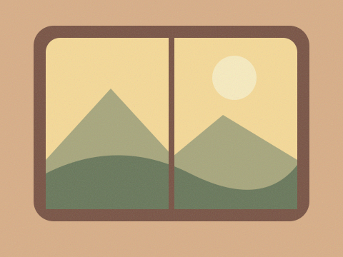

A PERSONAL ART JOURNAL / VOL. 01
Sophie’s
World
Places, things made in the kitchen, and stories I keep coming back to.
 01 / Follow a thread ↗
01 / Follow a thread ↗

About
I’m Sophie. This is a place for things I want to remember, from a meal at home to a view out a train window.